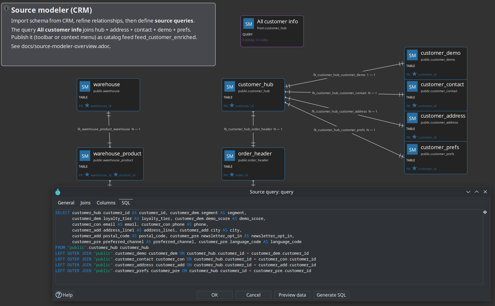
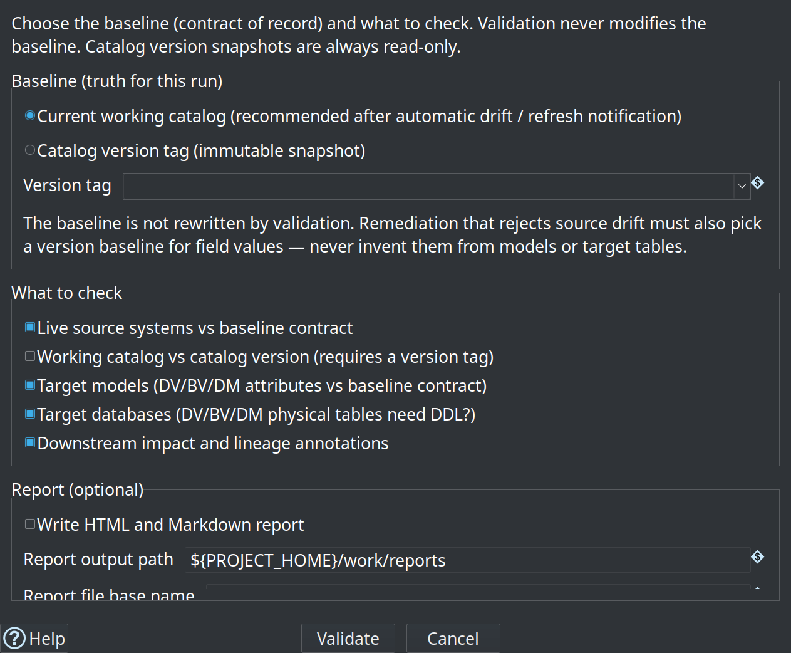
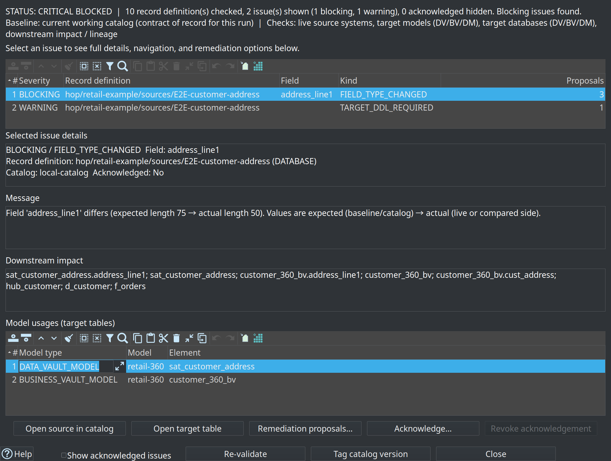
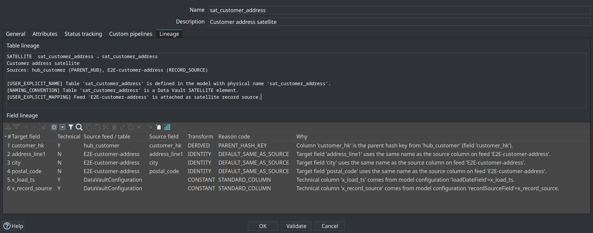

Hop Data Vault 2.0
Visual, model-driven Data Vault, Business Vault, and dimensional modeling for Apache Hop — with a shared Data Catalog, schema gates, content quality, and explainable source-to-target lineage.
The problem: hand-written vault pipelines drift from the model — hashing rules diverge, satellite CDC is copy-pasted, and hybrid teams (Hop + dbt + SQL) lack one metadata picture. The approach: the visual model is the contract; Hop generates DDL, insert-only loads, SCD2 consumption, and marts from that contract — from source systems through the warehouse.
Explore by topic
Architecture
Sources → DV → BV → DM with Catalog, harvest, validation, DQ, and lineage.
Data Catalog
DV_SOURCE contracts, COMPOSITE / JSON / PIPELINE feeds, versions.
Source modeler
.hsm tables, Free SQL, pipeline sources, Hop Server JDBC.
Raw Data Vault
Hubs, links, satellites, hybrid modes, composite BKs, aliases.
Business Vault
SCD2 (single & multi-sat), PIT, SQL tables, BV Update.
Dimensional
Kimball dimensions, facts, bridges — Publish & Update.
Schema & harvest
Metadata harvest, CI/CD gates, blast radius, reports.
Data quality
Measure → gate, Phase 2 rules, pre/post load policies.
Lineage
Table/field reasons, OpenLineage / Marquez, reverse browser.
Roadmap
Plans and open GitHub issues grouped by theme.
Architectural overview
One metadata chain from staging to consumption: left-to-right layers, Data Catalog underneath, and cross-cutting schema validation, data quality, and lineage.
Sources → Raw DV → Business Vault → Dimensional (left to right). Catalog is the shared foundation; validation, DQ, and lineage cut across all layers.
Hybrid integration modes (per table)
Not every raw vault table must be Hop-loaded
| Hop managed | Generate DDL and update pipelines (default). |
|---|---|
| External read-only | Table loaded elsewhere (dbt, SQL, other ETL); Hop documents it for BV and catalog. |
| Custom pipelines | You own .hpl loaders; Hop orchestrates them with generated ones. |
Also on the map
- Execution maps (
.hem) — crawl workflows/models into lineage graphs for GUI and ops. - AI Help — optional LLM advisory with review-before-apply proposals.
- Workflow actions — Data Vault / Business Vault / Dimensional Update, Validate resource definitions, DQ measure & gate.
Feature maturity
What is available today versus planned. Detail pages explain each capability.
| Feature | Status | Detail |
|---|---|---|
Data Catalog + DV_SOURCE (DB / COMPOSITE / JSON / PIPELINE) | Available | Catalog |
Source modeler (.hsm): tables, FKs, queries, JSON, pipeline sources | Available | Source modeler |
| Free SQL over source models (Calcite) + Source model SQL transform | Available | Source modeler · #117 |
Hop Server JDBC (jdbc:hop-hsm:) + thin DBeaver client | Available | Source modeler |
Metadata harvesting + schema gate HARVEST_RUN | Available | Schema & harvest · #112 |
| Resource definition validation (issues, proposals, acknowledgements) | Available | Schema & harvest |
| Catalog version tags + schema impact simulation (CI/CD) | Available | Schema & harvest |
| Data quality measure + quality gate (Phase 2 rules, persist, alerts) | Available | Data quality |
Data Vault modeler (.hdv) + Update action | Available | Raw DV |
| Composite hub BKs · hub aliases · integration modes | Available | Raw DV |
Business Vault modeler (.hbv): SCD2, PIT, SQL views/tables | Available | Business Vault |
Dimensional modeler (.hdm) + Publish / Update | Available | Dimensional |
| Source-to-target lineage, explainable DDL, reverse browser | Available | Lineage |
| Marquez / OpenLineage export | Available | Lineage · #101 |
Execution maps (.hem) · architecture export (Draw.io) | Available | Operations |
| AI Help · project Search Everywhere (Hop 2.19) | Available | Operations |
| Record Definition transforms · Date Dimension Generator | Available | Operations |
| BV naming rules engine | Planned | Roadmap · #41 |
| Automated execution with dependency resolution | Planned | Roadmap · #42 |
jdbc:hop-hsm: + thin client for DBeaver;
pipeline sources on .hsm; metadata harvesting phases 1–4; richer retail CRM / ASN fixtures.
Data Catalog & sources
Sources live as catalog record definitions — one stable vocabulary from feeds through models to generated pipelines.
What lives in the catalog
DV_SOURCE— logical feeds with record-source indicator, optional group for partial loads, and physical layout: database table, COMPOSITE (multi-table query), JSON, or PIPELINE.- Namespace pattern:
hop/{project}/sources(e.g.hop/retail-example/sources). - FILE catalog storage (retail:
work/edw-catalog/) opened in the Hop Data Catalog perspective. - Hubs, links, and satellites reference source names, not raw connection strings.
- Go to origin opens the
.hsmcard for published composite / JSON / pipeline feeds.
Published namespaces
hop/{project}/models/{model}/— DV table layoutshop/{project}/business-vault/{model}/— BV targetshop/{project}/dimensional/{model}/— mart tableshop/{project}/lineage/{dv|bv|dm}/{model}/— lineage siblings (derived, not edited)hop/{project}/operations/— load metrics, harvest, quality ops stubs
Catalog versions & transforms
- Tag catalog version freezes source contracts (e.g.
v1.0.0). - Baselines for the CI/CD schema gate (live source, working vs tag, version vs version, harvest run).
- Resource definition group scopes which models participate.
- Pipeline transforms: Record Definition Input / Output / Data Input.
Source modeler (.hsm)
Visual model of source systems: tables, relationships, multi-table queries, JSON extractions, pipeline contracts — and free SQL virtualisation over the whole model.
Tables & FKs
Import database tables with PK/FK discovery, crow’s-foot relationships, and live schema checks.
Source queries
Join builder + projection, or Free SQL (Calcite) with explain plan, preview, and publish as COMPOSITE.
JSON & pipelines
Flatten parent JSON fields; declare .hpl + output transform + fields; publish as JSON / PIPELINE.
Free SQL & data virtualisation (#117)
- Apache Calcite parses SQL against the source model schema (tables, named queries, JSON, pipeline feeds).
- Full pushdown — single Table Input when all tables are DATABASE on one connection.
- Residual path — Sort + Merge Join, Filter, Group By, Calculator, MetaInject / JSON subgraphs when mixed.
- Source model SQL pipeline transform for runtime free SQL against a
.hsm. - Source model service metadata maps a public name to a server-side
.hsmpath. - Hop Server servlet
/hop/sourceModelData+ thin client jarhop-hsm-jdbcfor DBeaver:jdbc:hop-hsm://{username}:{password}@{host}:{port}/{database}({database}= service name = JDBC schema).
Publish & load
- Queries → catalog
COMPOSITE - JSON → catalog
JSON(parent + JsonInput loads) - Pipelines → catalog
PIPELINE(MetaInject + record source) - DV Update injects generated graphs with hub sort/distinct when needed
Retail sample
retail-example/models/source-tables-crm.hsm- Multi-table customer query, shipment JSON, ASN pipeline feed
- Service metadata:
metadata/source-model-service/crm.json

Data Vault modeler (.hdv)
Visual hubs, links, and satellites with embedded configuration. The model drives DDL and insert-only load pipelines.
Hubs
Core business entities with multi-source business keys; composite BKs (multi-field → one vault column).
Links
Relationships between hubs; transactional links with dependent child keys; hub aliases (same hub twice).
Satellites
Descriptive history — hashdiff or load-end-date patterns; multi-active via driving keys; JSON/pipeline sources.
Operations on the model
Data Vault Update action
- Validates (optionally), generates DDL, stages update pipelines
- Runs loads in parallel with a shared load timestamp
- Supports record source groups for partial model updates
- Fail-if-DDL and explainable structure changes (via lineage)
DV 2.0 options
- Hashing: MD5 / SHA1 / SHA256 / SHA512
- HEX, String, or Binary hash keys
- Trim + casing, delimiter, null placeholder
- Unknown / invalid sentinel records
- Standard column naming (load TS, record source)

docs/images/)Business Vault (.hbv)
Raw vault stores technical history. Business Vault delivers functional timelines — when the source said a value was true.
Table types
SCD Type 2
valid_from/valid_to(configurable names)- Open-ended current rows
- Single-satellite or multi-satellite merge (e.g. Customer 360)
- Incremental load support with separate DV/BV databases
PIT & SQL
- PIT helpers for point-in-time joins across satellites
- SQL business tables — view or table materialization
ref()/sourcehelpers; BV→BV canvas references- Catalog model registry for short lookups

Dimensional modeler (.hdm)
Kimball star/snowflake modeling on the same canvas patterns as the vault modelers — driven by metadata, loaded by workflow actions.
Dimensions
Conformed, role-playing, junk, range dimensions.
Facts
Transactional, snapshot, and aggregate facts.
Bridges
Many-to-many relationship structures.
Date dimension
Date Dimension Generator transform for calendar attributes.
Dimensional Publish
Draft a .hdm model from a .hdv vault as a starting point for the mart design.
Dimensional Update
Load the mart from the model — same validation-before-execution philosophy as DV/BV updates.

Schema gates & metadata harvest
Catch broken references and contract drift before production loads — in the GUI and as a CI/CD gate.
Check model
- Same engine in GUI toolbar and update actions
- Structural rules + optional live source type checking
- Stops broken references before pipeline generation
Resource definition validation
- Feed-level checks with remediation proposals
- Acknowledgements for accepted exceptions
- Downstream impact Source→DV→BV→DM
- Design-time options: baseline + axes before each run
Metadata harvesting (phases 1–4)
- Harvest source metadata action — connection-batched live discovery, OPS history (
schema_harvest_*) - Does not rewrite the catalog; observation is separate from load
- Schema gate mode
HARVEST_RUNreuses a harvest without rediscovery - History browser, PK/FK drift, apply FKs → catalog / generate
.hsm, model-check prefers harvest for types
Validate resource definitions — CI/CD schema gate
- Compare modes: live source · working vs tag · version vs version · HARVEST_RUN
- Failure severity:
FAIL_ON_BLOCKING,FAIL_ON_WARNINGS,WARN_ONLY - Reports: Markdown and/or HTML with blast-radius tables (e.g. under
work/reports/) - Place the action before DV/BV/DM update actions in workflows
Catalog-safe length remediation
- Working catalog field length is the contract — length expand does not rewrite the catalog
- Expands DV satellite, BV SCD2 maps, and DM SQL-sourced columns (multi-table SQL + workflow)
- Retail sample:
workflows/schema-remediation/accept-address_line1/(address_line1→ 75 on sat / BV /d_customer)



Data quality measure & gate
Schema contracts are not enough. Measure content rules against sources and published targets, then apply policy.
Measure Data Quality
Run rules against catalog subjects; produce a report; optionally persist history. Does not fail the workflow on findings (only infrastructure errors).
Evaluate Quality Gate
Apply policy to a report; optional alert sinks. Can fail the workflow (FAIL_ON_BLOCKING / FAIL_ON_WARNINGS) or alert only.
Typical patterns
Rule library (Phase 1 + 2)
Phase 1: min/max row count, NOT NULL, allowed values, range, not-empty string.
Phase 2: null ratio max, min/max distinct, regex, min/max length, SQL assertion (trusted authors; single SELECT).
Source-to-target lineage
Which feed contributes to a target? How is each column derived? Why does that mapping exist? Models remain the source of truth — lineage is a deterministic projection.
Capabilities
- Table + field lineage for DV, BV, and DM with structured reason codes
- Lineage tab on hub, link, satellite, BV SCD2, and dimensional table dialogs
- Explainable DDL — every structure change is explained via lineage edges (not a boolean only)
- Catalog publish — sibling records under
hop/{project}/lineage/… - Drift gate — Validate resource definitions compares models to catalog lineage baselines
- Reverse browser — from source field to all DV/BV/DM consumers (Resource definition group → Browse lineage…)
- OpenLineage / Marquez export (0.5.0) — workflow action Export data lineage: folder and/or HTTP POST, column lineage, physical location facets, dimension-alias symlinks
Selected reason codes
| Code | Meaning |
|---|---|
USER_EXPLICIT_MAPPING | Explicit source field mapping (e.g. hub business key) |
DEFAULT_SAME_AS_SOURCE | Target column uses the same name as the source |
STANDARD_COLUMN | Config-driven technical column (load TS, record source, …) |
HASH_FROM_BUSINESS_KEYS | Hash key derived from business keys |
LINK_HUB_KEY_MAPPING | Link maps source columns to participating hub keys |
BV_SCD2_FIELD_MAP | Explicit Business Vault SCD2 field mapping |
DM_ROLE_MAPPING | Dimensional role, measure, or staging mapping |

Operations, execution maps & AI
Workflow-driven batches, observable loads, optional AI advisory — modelers stay in control.
Execution maps (.hem)
- Crawl a root workflow or model
- Persist a graph of workflows, models, generated pipelines, source datasets
- Open in Hop GUI for execution and lineage-oriented views
Runtime operations
- Docker runners:
scripts/run-hop.sh,run-postgres.sh - Parallel pipeline orchestration
- Record source groups for partial loads
- Catalog-backed load-run metrics; workflow load overview; per-table duration bars
Pipeline transforms & tooling
- Record Definition Input / Output / Data Input — catalog definitions and field layouts as rows
- Source model SQL — free SQL against a
.hsmat runtime - Date Dimension Generator — populate standard calendar dimension attributes
- Architecture export — Draw.io SOLUTION / inventory / DV·BV·DM diagrams
- Search Everywhere — Hop 2.19 project search for models and plugin metadata
hop svg— export pipelines, workflows, and models to SVG
AI Help (optional)
LLM advisory on Data Vault models, pipelines, and workflows — scenarios, context inclusions, review-before-apply proposals.
- Suggest hubs, links, satellites from catalog sources
- Layout and type mapping proposals
- Performance tuning scenario using load-run metrics (parallel copies, preload cache)
Configure under Hop GUI → Configuration → AI Assistant. Human modelers remain in control.

Sample projects
Two Hop projects ship with the plugin — a tutorial path and a CI regression suite.
retail-example
Learning path — CSV → CRM → DV → BV → DM, initial and monthly updates.
- Register as Hop project
retail-example - Source model
source-tables-crm.hsm(queries, JSON, pipeline feeds) workflows/run-retail-initial.hwfthen monthlyrun-retail-update.hwf- Quality gates pre/post load; optional harvest + schema remediation samples
- Primary onboarding:
docs/getting-started-retail.adoc
integration-tests
CI / regression — Customer 360, multi-active, external read-only, golden datasets.
- Register as Hop project
hop-data-vault - PostgreSQL, MySQL, SingleStore, SQL Server runners
./run-tests.shor multi-DB Docker matrix
Featured fixtures
- vault1 — classic hub / link / satellite
- customer-phone — multi-active satellite
- customer-360 — four satellites merged into one BV SCD2 table
- customer-360-external — same BV with external read-only DV satellites
- retail CRM HSM — Free SQL, shipment JSON, ASN pipeline, source-model-service
crm
Video tutorials
Planned functionality & open issues
From design plans in docs/plans/ and GitHub issues on
mattcasters/hop-data-vault
(snapshot as of 2026-08-10). Pre-1.0 software — capabilities can still evolve.
Recently shipped
Free SQL / source-model virtualisation
Calcite free SQL, Source model SQL transform, Hop Server servlet + thin hop-hsm-jdbc client for DBeaver.
Metadata harvesting
Harvest action, OPS history, HARVEST_RUN gate mode, history browser, FK apply / HSM generate.
Pipeline sources on source modeler
Declare .hpl + output fields; catalog PIPELINE; MetaInject loads with record source.
Marquez / OpenLineage export
Export data lineage action (folder + HTTP), physical location facets, dimension-alias symlinks.
Hub aliases · Draw.io export · Search · RDG update
Same hub twice on a link; architecture export; Hop 2.19 project search; Update resource definition group action.
Named plans Planned
BV naming rules engine
Configurable naming conventions for Business Vault tables and columns.
Coach panel · AI M2 · metrics extensions
In-modeler coaching UI, deeper AI assistant milestones, load-run metrics evolution.
Platform & automation
Automated execution with dependency resolution
Hand over DV/BV/DM models; resolve update order, parallel tracks, per resource group, skip already-updated windows.
Automated DDL regression testing / DDL guard
Compare generated DDL to deployed schema; halt on destructive changes until human approval.
Downstream impact dry-run on field changes
When updating catalog source fields, simulate Source→DV→BV→DM consequences before apply.
Lineage & observability
Visual lineage with live metrics
Overlay runtime telemetry on hubs/satellites (e.g. “42 min today vs 2 min average”).
Time-travel auditing & as-of validation
Automated as-of reconciliation: sample historical source vs vault PIT query and diff.
Modeling enhancements
Date dimension enhancements
Custom SQL attributes, relative attributes (YTD, M−1, …) driven by a business reference date.
dbt-style macros in SQL Business Vault tables
Register macros in Hop metadata; path toward dbt-core interoperability.
Ghost records & early-arriving facts
Built-in orphan prevention, quarantine / error satellite, auto placeholder hubs.
UX, docs & follow-ups
Validation issues UX
Clearer path from found issues to details/proposals (beyond double-click).
Automatic model documentation generator
Generate table docs, descriptions, and source-to-target mappings from models.
PK / constraints in generated DDL
Shipped in 0.5.0: optional primary and foreign keys on DV/BV/DM model DDL (default off).
Summary
The Hop Data Vault plugin turns Data Vault 2.0 from a pile of pipelines into a governed, model-driven platform.
Model the warehouse. Let Hop generate the mechanics.
Source systems from .hsm · Raw vault from .hdv · Business vault from .hbv ·
Dimensional marts from .hdm · Catalog, harvest, validation, quality · Free SQL / JDBC over sources ·
Lineage that explains every mapping.
Who benefits
| Architects | Governed hashing, hybrid warehouses, schema gates, harvest history, lineage drift detection. |
|---|---|
| Modelers | Visual design from source to mart, Free SQL, generated pipelines, BV without hand-written SCD2 SQL. |
| Operations | Workflow batches, CI/CD gates, quality pre/post load, execution maps, parallel orchestration. |
| Analytics / BI | SCD2 timelines, dimensional marts; optional DBeaver access via jdbc:hop-hsm: to source models. |
Get started
- Install plugin 0.8.0 into Apache Hop 2.19.0
- Walk
retail-example/withdocs/getting-started-retail.adoc - Deep fixtures:
integration-tests/ - Feature list:
docs/feature-overview.md